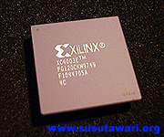
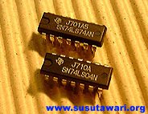
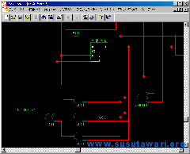
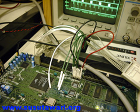

FPGA (Field Programmable Gate Array) とは「プログラム可能なLSI」のことです。 各半導体メーカから発売されていますが、有名なのは Xilinx社とAltera社のものです。 （ただAltera社はFPGAという名前は使っておらず、 メーカ毎に構造も多少異なるようです。） 写真はXilinx社のXC4003Eですが、見た目は普通のLSIと何ら変わらず、そのパッケージにもさまざまな形態があります。
しかし、その使い方は他のLSI（専用LSI）とは全く異なります。LSIは普通、各半導体メーカが 自社、或いは他の電気メーカなどからの要求仕様に応じて設計し、半導体工場にて製造します。工場製造では設備の立ち上げ等の初期費用がかかるため、ある程度の製造数がないと単価が非常に高くなってしまいます。そこで１種類につき数万〜数百万個などが１度に製造されます。もちろん数十〜数千個単位で作ることも可能ですが、その製造費用は数千万〜数億円とも言われており、個人はおろか、大学の研究室などでもなかなか手を出せるものではありません。 従って、通常はメーカが自主的、或いは他の要求で製造したLSIの中から、自分の用途に合うものを探して使うということになります。このようなことからメーカ側も特定の用途に特化した専用LSIの他に、汎用LSIと呼ばれるような基本機能のみを実装したLSI/ICを製造してきました。

写真はその一例である、74シリーズと呼ばれるICです。74シリーズはANDゲートやORゲート、或いはカウンタやシフトレジスタなどディジタル回路を構築する上で必要となる基本要素を実装したもので、古くから利用されており、現在でも回路の一部で使われています。 この74シリーズとメモリなどを使ってコンピュータなどの大きなシステムを作ることも可能ですが、現在このような方法で大きなシステム（大きな回路）を作る人はまずいません。 それはまず第一に作るのが大変だからです。１つの74シリーズICは数個のゲートを実装し、十数本のピンを持っていますが、これを半田付けして回路を組むのは回路が大きくなればなるほど接続数が増え、ただ手間がかかるだけでなく、接続ミスの可能性も高くなって行きます。 従って巨大な回路（数百〜数千ゲート規模など）を作るのはデバッグ作業も含めて、非常に困難となって行きます。また手間を考えずにできたとしても、システムの性能として、回路の物理的な実装面積が大きい、動作速度が遅い（動作周波数をあまり上げられない）などの問題があります。それでも真空管でディジタル回路を組んでいた時代に比べればはるかにコンパクトで高速ですが、今はさらに進んだ手法があります。

それがFPGAを使った開発手法です。FPGAはそのままでは前述の専用LSIや74シリーズICのような特定の機能はしません。ユーザーがプログラムすることで初めて機能するのです。プログラムをするICというとPICマイコンのようなものを思い浮かべる人も多いと思いますが、FPGAに書き込むのはCPUが実行するプログラム（いわゆるソフトウェア）ではなく、組み合わせ回路や順序回路、その接続情報などディジタル回路そのものです。つまり74シリーズICのような汎用ICを基板の上に多数並べて回路を作るということを１つのFPGAで実現できるのです。またその回路設計も全てPCやWS上で行うため、半田付けで回路を組む場合と違い、配線や論理の変更も比べ物にならない程簡単です。これは単に開発時間を短くするというだけでなく、配線不良による回路の品質、信頼性の低下も無くします。このような開発手法、アイディアはそれほど新しいものではなく、FPGA以外にもGALといったいわゆるPLD全般に言えることです。しかし以前のPLDは実現できるゲート数がそれほど多くなく、高速化を要求する回路の一部で使われる程度でした。FPGAが以前のPLDと大きくことなるのは、この「実現可能なゲート数」と言えるでしょう。2002年現在実現可能（インプリメント可能）とされているのは数百万ゲートです。これはどの位の規模かというと、例えば以前筆者の作成したZ80互換CPUは約5千ゲートでした。つまり例えば百万ゲートならこのZ80互換CPUが約200個実装可能ということになります。（実際にはFPGAの構造上、こんなに単純に正確な換算はできません。あくまで目安程度です。）

実際の開発手法はパソコンやワークステーション上のCADで回路図を描き、その「回路図」をコンパイルして、できたビットストリーム・データをケーブル接続されたFPGAへダウンロードします。ダウンロードが完了すれば、もうFPGAは「回路図」通りの機能を果たす１つのチップです。実際に動作させ、おかしなところがあれば回路図を見直し修正し、コンパイルして再度ダウンロードすれば良いのです。つまり一度FPGAとその周辺回路を半田付けしてしまえば、もう半田ごてを握ることはありません。最近は回路図を直接描くのではなく、HDL（ハードウェア記述言語）や、さらに上位のCライクな言語で機能を記述し、論理合成→コンパイル（ビットストリーム生成）→ダウンロードというのが主流のようです。ただ、筆者は個人的に「回路図」による設計の方が好きです。
以上、まとめるとではFPGAを使ってどんなものが作れるのでしょうか？そもそもFPGAに限らず（専用LSIなども含め）、「ハードウェア」で機能を実現する理由は一般に以下の３つが考えられます。
これらいづれも要求されないのであれば、パソコンで処理（ソフトウェアで実現）する方が良いかもしれません。
しかし、アマチュア電子工作家？としては、そんなことより、とにかく「オリジナルLSI」ということに憧れてしまいます。そして、その先にあるアプリケーションといえば、やはり
「オリジナル・コンピュータ」でしょう。そして、ここですごいことに、FPGAを使って作れるのは、ただのコンピュータではなく、「ワンチップ・コンピュータ」(SoC: System on Chip) なのです。どうです、あなたもFPGA使いになりませんか？